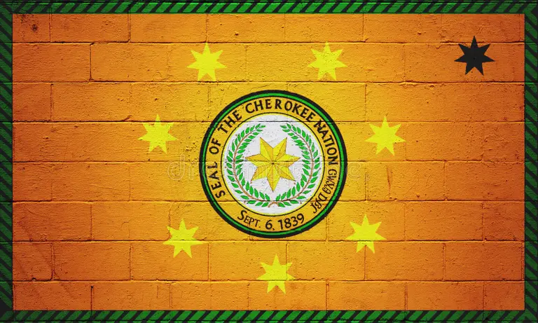

Cherokee History
Cherokee, North American Indians of Iroquoian lineage who constituted
one of the largest politically integrated tribes at the time of European
colonization of the Americas. Their name is derived from a Creek word
meaning “people of different speech”; many prefer to be known as
Keetoowah or Tsalagi. They are believed to have numbered some 22,500
individuals in 1650, and they controlled approximately 40,000 square
miles (100,000 square km) of the Appalachian Mountains in parts of
present-day Georgia, eastern Tennessee, and the western parts of what
are now North Carolina and South Carolina. Traditional Cherokee life and
culture greatly resembled that of the Creek and other tribes of the
Southeast. The Cherokee nation was composed of a confederacy of
symbolically red (war) and white (peace) towns. The chiefs of individual
red towns were subordinated to a supreme war chief, while the officials
of individual white towns were under the supreme peace chief. The peace
towns provided sanctuary for wrongdoers; war ceremonies were conducted
in red towns.
